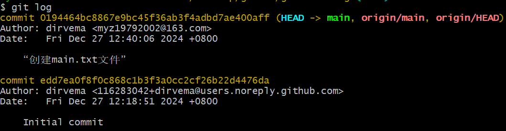

Git概述
Git 诞生于一个极富纷争大举创新的年代。Linux 内核开源项目有着为数众多的参与者。 绝大多数的 Linux 内核维护工作都花在了提交补丁和保存归档的繁琐事务上（1991－2002年间）。 到 2002 年，整个项目组开始启用一个专有的分布式版本控制系统BitKeeper来管理和维护代码。
到了 2005 年，开发BitKeeper的商业公司同Linux内核开源社区的合作关系结束，他们收回了Linux内核社区免费使用BitKeeper的权力。 这就迫使Linux开源社区（特别是Linux的缔造者Linus Torvalds）基于使用BitKeeper时的经验教训，开发出自己的版本系统。他们对新的系统制订了若干目标：
- 高速、简单
- 对非线性开发模式的强力支持（允许成千上万个并行开发的分支）
- 完全分布式
- 有能力高效管理类似Linux内核一样的超大规模项目（速度和数据量）
集中式版本控制系统 vs 分布式版本控制系统
-
集中式版本控制系统，例如SVN，版本库是集中放在中央服务器的，而开发人员工作的时候，用的都是自己的电脑，所以首先要从中央服务器下载最新的版本，然后开发，开发完后，需要把自己开发的代码提交到中央服务器。集中式版本控制工具 的缺点：服务器单点故障问题、容错性较差。
-
分布式版本控制系统（Distributed Version Control System，简称 DVCS） ，例如免费开源的Git。分为两种类型的仓库：本地仓库和远程仓库。对比SVN集中式版本控制系统，分布式不受网络环境的限制。本地仓库：是在开发人员自己电脑上的Git仓库；远程仓库：是在远程服务器上的Git仓库
Git与SVN的区别：
Git 是分布式的，SVN 不是：这是 Git 和其它非分布式的版本控制系统，例如 SVN，CVS 等，最核心的区别。
Git 把内容按元数据方式存储，而 SVN 是按文件：所有的资源控制系统都是把文件的元信息隐藏在一个类似 .svn、.cvs 等的文件夹里。
Git 分支和 SVN 的分支不同：分支在 SVN 中一点都不特别，其实它就是版本库中的另外一个目录。
Git 没有一个全局的版本号，而 SVN 有：目前为止这是跟 SVN 相比 Git 缺少的最大的一个特征。
Git 的内容完整性要优于 SVN：Git 的内容存储使用的是 SHA-1 哈希算法。这能确保代码内容的完整性，确保在遇到磁盘故障和网络问题时降低对版本库的破坏。

Git代码托管服务：Git中存在两种类型的仓库，即本地仓库和远程仓库。那么如何搭建Git远程仓库呢？我们可以借助一些代码托管服务来实现，其中比较常用的有GitHub、Gitee、GitLab等。
-
gitHub（ 地址： https://github.com/ ）是一个面向开源及私有软件项目的托管平台，因为只支持Git 作为唯一的版本库格式进行托管，故名gitHub。
-
码云（地址： https://gitee.com/ ）是国内的一个代码托管平台，由于服务器在国内，所以相比于GitHub，码云速度会更快。
-
GitLab （地址： https://about.gitlab.com/ ）是一个用于仓库管理系统的开源项目，使用Git作为代码管理工具，并在此基础上搭建起来的web服务。
Git的基本使用
git工作区、暂存区和版本库
-
工作区：工作区是你在本地计算机上的项目目录，你在这里进行文件的创建、修改和删除操作。工作区包含了当前项目的所有文件和子目录。
-
暂存区：英文叫 stage 或 index。一般存放在 .git 目录下的 index 文件（.git/index）中，所以我们把暂存区有时也叫作**索引*（index）。暂存区是一个临时存储区域，它包含了即将被提交到版本库中的文件快照，在提交之前，你可以选择性地将工作区中的修改添加到暂存区。
-
工作区有一个隐藏目录.git，这个不算工作区，而是Git的版本库。版本库包含项目的所有版本历史记录。每次提交都会在版本库中创建一个新的快照，这些快照是不可变的，确保了项目的完整历史记录。版本库分为本地版本库和远程版本库。这里主要指本地版本库。

- 图中左侧为工作区，右侧为版本库。在版本库中标记为 “index” 的区域是暂存区（stage/index），标记为 “master” 的是 master分支所代表的目录树。
- “HEAD” 实际是指向 master 分支的一个"游标/指针"。所以图示的命令中出现HEAD的地方可以用master来替换。
- 图中的objects标识的区域为Git的对象库，实际位于".git/objects"目录下，里面包含了创建的各种对象及内容。
- 当对工作区修改（或新增）的文件执行 git add 命令时，暂存区的目录树被更新，同时工作区修改（或新增）的文件内容被写入到对象库中的一个新的对象中，而该对象的ID被记录在暂存区的文件索引中。
- 当执行提交操作git commit时，暂存区的目录树写到版本库（对象库）中，master 分支会做相应的更新。即master指向的目录树就是提交时暂存区的目录树。
- 当执行git reset HEAD命令时，暂存区的目录树会被重写，被master分支指向的目录树所替换，但是工作区不受影响。
- 当执行git rm –cached filename命令时，会直接从暂存区删除文件，工作区则不做出改变。
- 当执行git checkout . 或者git checkout – filename命令时，会用暂存区全部或指定的文件替换工作区的文件。这个操作很危险，会清除工作区中未添加到暂存区中的改动。
- 当执行 git checkout HEAD . 或者 git checkout HEAD filename 命令时，会用HEAD指向的master分支中的全部或者部分文件替换暂存区和以及工作区中的文件。这个命令也是极具危险性的，因为不但会清除工作区中未提交的改动，也会清除暂存区中未提交的改动。
git常用的基本操作命令
git clone：将远程仓库中内容克隆到本地（可以ssh或http）。默认会自动创建一个名为orgin的远程仓库；并在本地仓库生成一个默认的主干分支，自动追踪远程origin/main。
注意：远程仓库的默认名称是origin（在.git下的config文件中可以更改）
更改远程的默认仓库名：修改config文件
git log：查看git日志
git branch：查看本地当前分支
-r：查看远程分支
-a：同时查看本地分支和远程分支
-vv：查看分支追踪关系
git status：查看当前状态
git add filename或.：将工作区的代码改动（某个文件或全部内容），提交到暂存区中

git commit -m “说明内容”：将暂存区的改动提交到本地仓库的代码分支（当前是main分支）
此时本地仓库分支新于远程仓库分支
git push origin main:main：（前面一个是本地分支，后面一个是远程分支，两者相同，可以省略一个）：将本地仓库分支的内容推送到远程仓库中
查看此时日志信息
git pull：拉取远程仓库中的分支，经常git pull是一个好习惯
HEAD指针：本地仓库每一个分支上的代码修改都会生成一个commit id信息，HEAD指针指向最近一次的commit提交，通过这个commit id可以进行版本回退
整个流程：
git各阶段版本回退命令
-
工作区的修改没有add：比如修改main.txt后不想修改了：
git checkout -- main.txt或.（用本地仓库/分支的内容覆盖当前工作区的内容） -
已经将工作区的改动add到暂存区：
git reset HEAD（取消暂存区的修改，但文件内容的改动还在） -
已经将暂存区的改动commit到本地仓库：
git reset --hard commit-ID（本质是移动了HEAD指针）
-
此时的状态，回退成功（但此时工作区的修改已经不存在了）
 -
git reflog：可以查看HEAD指针的改动日志，并返回原状态，还是用git reset --hard commit-ID命令 -
状态还原（打出commit-ID前几位即可）：
-
回退已经提交到远程仓库的内容
- 先回退本地仓库，再强制更新远程仓库：重新走一遍流程后再push到远程仓库（本地仓库版本落后于远程仓库版本会push失败，更新才会push成功）
- 需要用
git push -f origin main（-f强制推送） git diff HEAD -- main.txt：查看工作区文件和仓库中该文件最新版本代码有何区别
团队中代码提交冲突的解决方案
团队开发中常见场景：
小张此时push会冲突：

-
如果可以自动合并（两人修改的位置不同）：此时需要先git pull，会自动合并阿亮的代码。然后在小张再push一次即可成功

-
如果不能自动合并（两人修改的位置有冲突）：小张git pull，但自动合并会冲突（此时需要手动解决冲突）
-
git会帮助生成冲突的辅助信息
-
手动解决冲突后，此时可以add、commit和push
-
git分支版本控制命令
本地分支管理
开发人员应该在本地多建立分支，在新分支上开发，再合并到指定的代码仓库中
-
创建并切换分支：
git checkout -b newbranch
-
但此时没有追踪关系，无法
git pull -
切换分支命令：
git checkout main -
此时修改main.txt文件，但push会失败
-
需要在main分支将newbranch分支合并过来（直接合并到本地仓库）：
git merge newbranch -
此时push才可以成功
-
此时可以删除newbranch分支（只有merge合并到main分支-d才能删除成功）：
git branch -d newbranch（-D 强制删除） -
（另一种方案）直接从new分支(sortdev)推送到远端master分支
合并分支冲突
上一小节把newbranch分支合并到main分支上时一切顺利，是因为newbranch分支在合并的时候，main分支没有做过任何改动
- 实际上有可能发生这样的情况：
-
啊亮从master分支创建了一个新的分支sortdev01，进行代码开发测试，提交
-
小张更新了master分支上的代码
-
啊亮切换分支到master，git pull同步远程仓库master主干的最新代码，发现有变化
-
啊亮直接git merge sortdev01就发生冲突了（无法合并）
-
冲突如下：只能手动修改
-
此时小张回到main分支做merge会冲突（自动合并失败，修改位置冲突）——只能手动解决
-
查看冲突内容
-
手动解决冲突后，再add，commit和push，成功
远程分支管理
在github上创建一个代码仓库，默认就拉了一个master主干分支，在master主干分支上开发了一期项目以后，再进行二期开发的时候，可以再拉一个dev分支出来，大家都在dev分支上开发，此时项目管理员可以把master分支的写权限关掉，因为一期功能开发验证完成，很稳定，此时可以拉取master代码，不能再push推送代码到master分支。
一般远程分支的创建都是由项目管理员来创建的，其它员工没有创建远程分支的权限，而且每一个远程分支的读写权限也都是由管理员来控制的。
-
创建远程分支（管理员才有权限），在这个新分支上开发新的功能，此时老分支不能再修改
-
此时pull会到新的开发分支上
-
追踪关系如下：
-
需要创建一个本地分支（最好和远端的新分支名称相同）：
git checkout -b dev01（此时没有任何追踪关系） -
创建本地分支并添加追踪关系：
git checkout -b dev01 origin/dev01 -
push到远端dev01分支上
-
设置已经存在的本地分支追踪哪个远程分支：
git branch -u <远程仓库名>/<远程分支名>
gitignore
gitignore忽略某些文件的版本跟踪，指有意忽略的未跟踪文件。
在项目中，并不是所有文件都要保存到版本库中，如日志文件、临时文件及工具生成的文件等。
注意：未跟踪，指的是之前没有被添加到版本库。否则这种用法是无效的。
- 使用方法：
- 在项目根目录创建.gitignore文件
- 用文本编辑器打开文件，进行配置——每项配置独占一行；每行的内容可以是：文件/目录的名称、路径或它们的模式匹配（regex）
- gitignore的匹配模式
空行不匹配任何文件，因此常用作分隔符（以方便阅读）
#用于注释，\表示转义（如需使用实体\，则要加引号"\”）
*可以匹配任何字符（0或多次），？可以匹配任何字符（1次）（注意：它们都不可以匹配/）
/用于分隔目录
当/在开头时，表示从.gitignore文件所在目录开始匹配。否则，下级都将匹配
当/在末尾时，只匹配目录，否则，则同名的目录和文件都将匹配
原先被排除的文件，使用!模式后该文件将会重新被包含。但如果了该文件的父级目录被排除了，那么使用!也不会再次被包含
[]通常用于匹配一个字符列表，如：a[mn]z可匹配amz和anz
**用于匹配多级目录，如a/**/b可匹配"a/b"，“a/x/b”，“a/x/y/b"等
- 举例
- 忽略所有内容：*
- 忽略所有目录：*/
- 忽略public目录下的所有内容，不包括favicon.ico文件：
- public/*#不能把目录本身也排除了
- !public/favicon.ico
-
检查自己写的ignore规则是否有效：
git check-ignore -v {文件或目录路径}——有输出证明被忽略 -
.gitignore只能忽略那些没有被追踪的文件，所以先纳入版本管理后写入.gitignore是无效的
-
解决方案：先删除本地缓存，之后再加入
1 2 3git rm x-r --cached . git add. git status
-
企业开发中Git的工作流
项目代码远程仓库的分支：master主干分支 dev开发分支 release发布分支
个人开发分支：feature特性分支 bugfix缺陷修改分支 hotfix热更新分支（旧的发表分支出现问题）
一般git的工作流程如下（例如dev开发阶段，其他阶段同理）：
-
创建个人本地开发分支：
git checkout-b feature/add_new_line origin/dev -
随时
git pull：比较好的习惯，保证本地分支和远程分支的最新代码保持同步 -
在本地分支feature/add_new_line上开发代码（add/commit），随时git pull（开发过程中可能有其他人提交）
-
个人本地分支推送到远程分支：
git push origin feature/add_new_line:feature/add_new_line_v1.0（会在远程代码仓库中新建一个feature/add_new_line_v1.0分支） -
提交个人远程代码分支和目标代码合入分支的MR（合并请求），相关负责人进行CR（Code Review）代码评审（代码评审工具：gitlab/gerrit）
-
相关负责人提出意见，本地修改相应的代码，推送到对应的远程代码分支上（git pull，如果有冲突手动解决）
-
代码CR意见处理完，相关负责人进行代码merge合并，代码修改从
feature/add_new_line_v1.0合入dev分支完成 -
删除个人远程代码分支：
git push origin [空格]:feature/add_new_line_v1.0